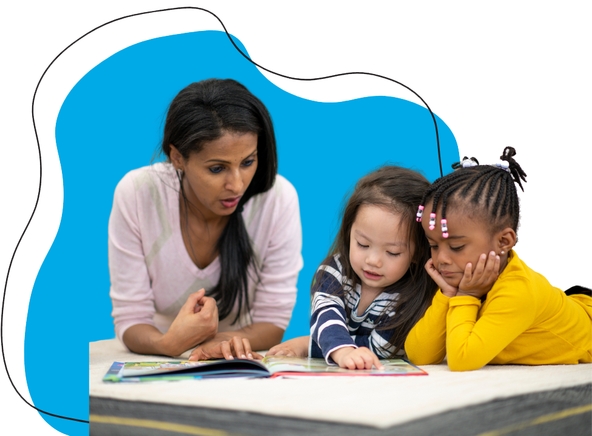

Our
Impact
Increasing Demand for Excellence
“EdReports has fundamentally changed the marketplace by holding people accountable to higher expectations for curriculum, while also offering a blueprint for how to transform industries—disciplined, sustained effort over time.”

Rebecca Kockler, Executive Director, Reading Reimagined and former Assistant Superintendent of Academic Content at the Louisiana Department of Education
At EdReports, we identify and drive demand for high-quality instructional materials so that more students have access to excellent curricula in the classroom. Because states and districts use our reports to better understand materials and push for quality content, publishers respond with improvements that better support the field. Across all reviewed content areas, we’ve seen a steady rise in curriculum quality, fueled by educators’ feedback and expectations.
40+
publishers have made improvements to their products in response to EdReports feedback
50%
of materials reviewed by EdReports met expectations for quality alignment by the end of 2024
Then
& Now:
Percentage of Materials Meeting Expectations for Quality Alignment
ELA
Math
Science
Empowering Districts with Knowledge
“The work of EdReports reviewers is some of the most important work educators are doing. …. There was disbelief from our teachers and principals that we could actually find high-quality materials that reflected our students’ needs and what we wanted our young people to be engaging in. But as we involved EdReports we were able to build on the groundwork we had laid for decisions that needed to be made around standards-aligned curriculum. We were able to learn more about what to look for in high-quality materials. Our review committee still says this was the best professional learning they ever received.”

Dr. Sonja B. Santileses, CEO of Baltimore City Public Schools
Knowledge is power, and an ever-growing number of districts and school leaders recognize the power and potential of quality materials. Districts and states of all sizes face a variety of challenges when selecting and implementing materials. One key lever to address these challenges is through supporting states and districts to implement smart adoption practices and use EdReports reviews as part of the decision-making process.
1,785+
districts with documented use of EdReports
18M+
students are served by districts who have used EdReports
55%
of principals have heard of EdReports (up from 13% in 2017)
124+
of the largest 200 districts documented using EdReports
States Driving Systemic Change
“In Kentucky, we know that ensuring all students become strong readers requires access to instructional resources that are both high-quality and evidence-based. Having reliable, research-based information is essential for empowering school districts to select resources that are standards-aligned and meet the diverse literacy needs of our students. Tools that reflect the science of reading and support structured literacy practices help us make decisions that align with our literacy goals and ensure every child has the opportunity for vibrant learning and lifelong literacy success.”

Micki Ray Marinelli, Chief Academic Officer, Office of Teaching and Learning, Kentucky Department of Education

EdReports reviews represent an early step in a long journey toward student impact, and states play a pivotal role in promoting the use of high-quality instructional materials. By defining what quality looks like, supporting comprehensive selection processes, and incentivizing curriculum use paired with ongoing professional learning, states drive meaningful change. We're proud to have supported many states over the years through our reports, resources, thought leadership, and direct collaboration.
43
43 states have drawn on EdReports’ work to promote awareness and selection of high-quality materials since 2015. This includes 37 states that list EdReports as a resource and 16 with which we've collaborated directly.
- Uses EdReports as a Resource
- Does Not Use EdReports as a Resource
Supporting State Innovation
EdReports has collaborated on multiple initiatives with the High-Quality Instructional Materials and Professional Development (IMPD) Network and its member states since its 2017 inception.
Dynamic Growth in Website Reach and Engagement
“The research is clear—the effective use of quality instructional materials can make a tremendous difference in helping students achieve success. Those districts and schools showing improvement engage in rigorous and deliberate materials selection processes, including deeply involving teachers and providing the necessary professional development and implementation support. In so many places across the country, EdReports' reviews and resources are enabling these approaches, informing the first steps leading to classroom experiences that raise achievement for students and help them reach their fullest potential.”

Paolo DeMaria, President and CEO, the National Association of State Boards of Education, and EdReports Board Member
Identifying excellence is an important step in achieving EdReports’ mission, but we know this is not enough to transform student learning outcomes. Reviews of instructional materials alone matter little if no one is reading them—but when districts have credible information about what makes a strong curriculum, they’re more equipped to demand quality from the instructional materials market. That’s why we’ve prioritized ensuring free and easy access to our reports and published extensive resources to help educators leverage the information in the reports. This focus has driven substantial growth in engagement, with annual website pageviews increasing from 500,000 in 2015 to over 4 million in 2024—totaling more than 20 million all-time views and reaching 5 million unique users.
20M+
views of the EdReports website
5M+
unique users of the EdReports website
14M+
views of K–12 reports
2.5M+
views of EdReports resources
Continuous Expansion of Reviews
“For years, Student Achievement Partners and EdReports have worked across the education sector to support educators and elevate the role of high-quality instructional materials in advancing equity and excellence in education. EdReports‘ 2025 launch of version 2.0 review tools is a testament to their dedication to learning from the field and refining its processes to meet evolving needs, ensuring all students have access to materials that foster engagement, rigor, and success.”

Joy Delizo-Osborne, President & CEO, Student Achievement Partners
What began as 87 grade-level reviews of K–8 math materials in 2015 now includes more than 1,200 reviews of K–12 math, English language arts, foundational skills, and science programs. We expanded to high school math and grades 3–8 ELA reports in 2016, K–2 comprehensive and high school ELA in 2017, middle school science and K–2 foundational skills supplements in 2019, K–5 science in 2020, and high school science in 2023. 2025 sees further growth, with the beginning of our first-ever reviews of pre-kindergarten instructional materials.
400+
K–12 ELA grade-level reports completed
600+
K–12 math grade-level reports completed
100+
K–12 science grade-level reports completed
97%
of the known K–12 market reviewed for comprehensive ELA and math materials
By Educators, For Educators
“Becoming an EdReports reviewer transformed the way I understood and discussed curriculum with my districts. The training gave me invaluable knowledge I could immediately apply, and participating in my first review deepened my perspective on high-quality instructional materials. Later, as an EdReports Klawe Fellow, I had the opportunity to expand that knowledge further—gaining insight into curriculum at the state level and working with leadership to drive meaningful change.”

Jonathan Regino, PreK–12 Math Supervisor, Interboro School District, Pennsylvania
Since day one, EdReports has centered educators in every aspect of our work. Educators lead the way in advocating for the tools and resources they and their fellow teachers need to ensure all students are ready for college, careers, and beyond. Reviewers, selected through a rigorous process, dedicate over 100 hours per series report to analyzing every page of instructional materials. These expert educators—including classroom teachers, district coaches, and state leaders—collaborate in professional learning communities and receive extensive training to ensure thorough, reliable evaluations. Their dedication has driven a decade of impactful reviews, empowering educators nationwide with the information to choose high-quality materials.
1000+
educator reviewers have participated in EdReports review teams
50
states represented within our diverse reviewer network, including Washington, D.C.
250+
teams of educator reviewers have collaborated to conduct reviews
43
educators took
part in the Klawe Fellowship
from 2019 to 2024, designing and implementing curriculum‑focused impact projects in their communities